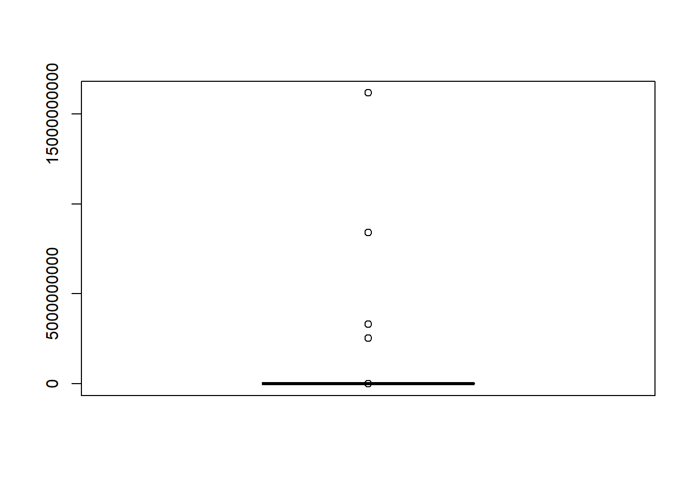
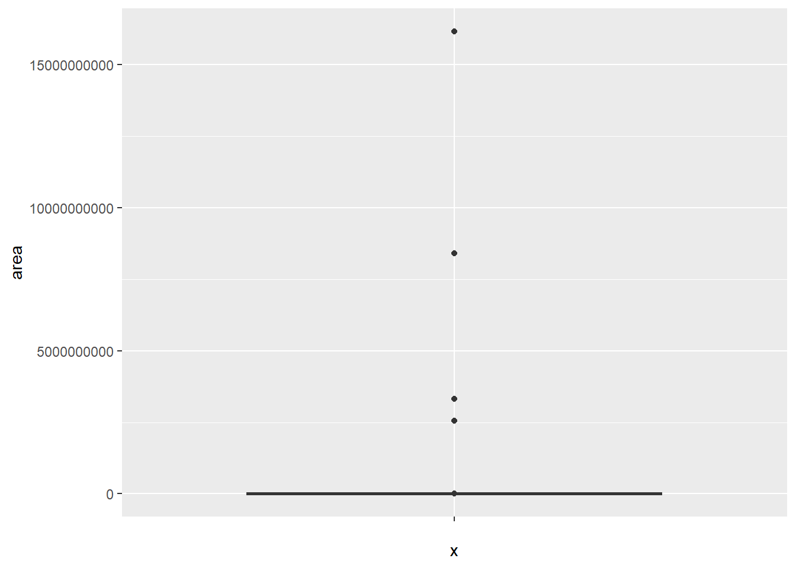
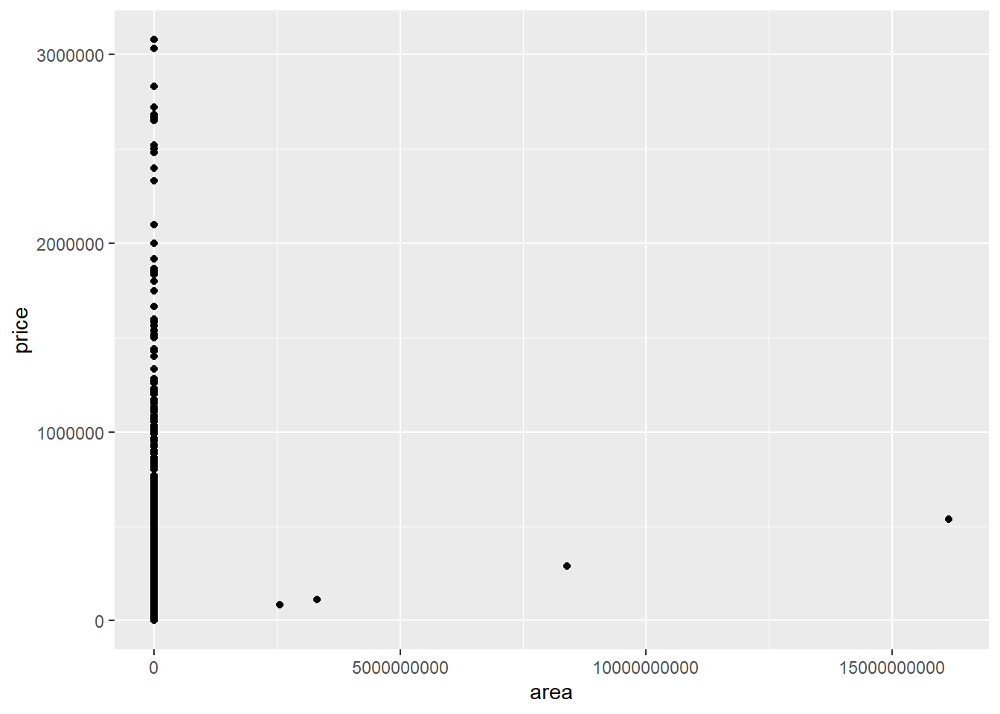
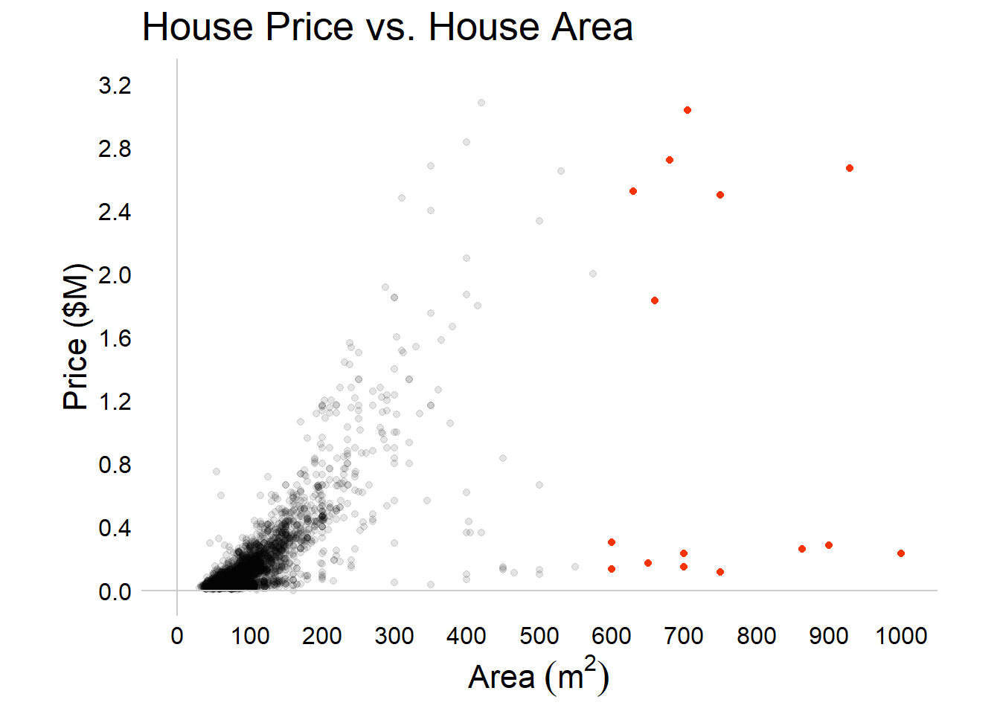

The dataset description mentions the following variables:
Area in square meters
Number of bedrooms
Has Parking or not
Has elevator or not
Has warehouse or not
The region where the house is placed
Price in Toman and USD
Goals
Load useful data manipulation and visualization libraries
Import a .csv file
Create a well-formatted scatterplot
Identify and highlight outliers
Create and export an updated visualization
Libraries
The tidyverse is an opinionated collection of R packages designed for data science. All packages share an underlying design philosophy, grammar, and data structures.
The tidyverse collection includes more libraries than needed here, but I’ll use readr for reading data, tibble for data organization, dplyr for data manipulation, and ggplot2 for data visualization. These libraries could be loaded individually, but loading the entire tidyverse collection is an easy approach. The library scales is also included for its ability to format currency data.
#load the tidyverse collection of librarieslibrary(tidyverse)
── Attaching core tidyverse packages ──────────────────────── tidyverse 2.0.0 ──
✔ dplyr 1.1.2 ✔ readr 2.1.4
✔ forcats 1.0.0 ✔ stringr 1.5.0
✔ ggplot2 3.4.2 ✔ tibble 3.2.1
✔ lubridate 1.9.2 ✔ tidyr 1.3.0
✔ purrr 1.0.1
── Conflicts ────────────────────────────────────────── tidyverse_conflicts() ──
✖ dplyr::filter() masks stats::filter()
✖ dplyr::lag() masks stats::lag()
ℹ Use the conflicted package (<http://conflicted.r-lib.org/>) to force all conflicts to become errors
library(scales)
Attaching package: 'scales'
The following object is masked from 'package:purrr':
discard
The following object is masked from 'package:readr':
col_factor
Loading Data
Now I will use read_csv to import the raw data as a tibble which is a type of data frame used to organize data in a tabular format.
# import the .csv # store the data main <-read_csv("data/housePrice.csv")
Rows: 3479 Columns: 8
── Column specification ────────────────────────────────────────────────────────
Delimiter: ","
chr (1): Address
dbl (3): Room, Price, Price(USD)
num (1): Area
lgl (3): Parking, Warehouse, Elevator
ℹ Use `spec()` to retrieve the full column specification for this data.
ℹ Specify the column types or set `show_col_types = FALSE` to quiet this message.
There are a few variables of interest in here so let’s focus on the area of the house and the price of the house in USD.
Scientific Notation
Scientific notation isn’t preferred in this example, so to globally prevent that style of formatting, the options can be changed with the scipen setting.
#turn off scientific notation globallyoptions(scipen =999)
Subsetting the data
To demonstrate how to work with a smaller dataset, let’s use dplyr extract only the columns we want from our original dataset and rename the columns using more simple lower-case formatting for consistency. The use of pipes is demonstrated here as well. Pipes allow you to string together multiple operations in one command. The dataset now only contains area in meters squared and price in USD.
#store updated tibblemain_subset <- main %>%select("Area", "Price(USD)") %>%rename ("area"="Area", "price"="Price(USD)") #view the updated tibblemain_subset
When examining a dataset for outliers, a box plot can be especially useful. Here, two methods are presented. The first uses base R and is quite simple but produces a low-quality plot. The second uses the ggplot2 library which is more powerful but is a bit more complex. In either case, the results indicate outliers are present, as seen by the data points above the very thin box.
# boxplot with base Rboxplot(main_subset$area)

#boxplot with ggplotggplot(data = main_subset, aes(x ="", y = area)) +geom_boxplot()

Scatterplot
Although there is reason to suspect outliers are present, let’s go ahead and create a scatterplot using ggplot2. Base R provides methods for creating a scatterplot but I will be using ggplot to create well-formatted visualizations anyway, so now is a good time to get started. It appears there are four very large houses that would count as outliers based on visual classification.
ggplot(data = main_subset, aes(x = area, y = price)) +geom_point()

Differential Visualization
A good approach to ensure the four large-area outliers stand out is to adjust their visual style separately from the other data points. That can be accomplished by adding an additional classification variable to the dataset and then using that variable to control color. Note that the classification variable is forced to be a factor-type variable which will be important during visualization.Note that the tibble format indicates the data type for each column. The area and price columns contain doubles and the class column contains a factor.
#add a binary variable to classify area as above or below some thresholdmain_subset$class <-as_factor(ifelse(main_subset$area>2000, 1, 0))main_subset
This scatterplot displays a much more visually pleasing distribution and is unaffected by the few unusually high-area data points because they have been filtered out with the help of the class factor variable established earlier.
With several improvements, the final scatterplot is ready for display. A more minimalistic approach has been used and the transparency of the data points has been adjusted to better visually indicate the dense clustering near the lower values. Although this plot code is verbose, it offers excellent control over plot content and style.
Another way to differentially style data points is to use conditional statements directly in the visualization code. In this demonstration, two ifelse statements are used to control both the color and transparency of the data points.A few other minor changes have been added as well including suppression of the legend. The scale_color_identity function was added to apply the colors correctly.
#store the plot in a variablep<-ggplot(data = main_final, aes(x = area, y = price/1000000, color=ifelse(area<600, "#000000","#ff3300"))) +geom_point(aes(alpha=ifelse(area<600, "0.05","1")))+scale_x_continuous(limits =c(0, 1000), breaks=seq(0,1000,by=100))+scale_y_continuous(limits =c(0, 3.2), breaks=seq(0,3.2,by=0.4))+theme_minimal()+scale_color_identity()+geom_vline(xintercept=0, linetype="solid", color ="#cccccc")+geom_hline(yintercept=0, linetype="solid", color ="#cccccc")+theme(panel.grid.major =element_blank(), panel.grid.minor =element_blank(),axis.text.x =element_text(face="plain", color="#000000", size=12, angle=0),axis.text.y =element_text(face="plain", color="#000000", size=12, angle=0),axis.title.x =element_text(face="plain", color="#000000", size=16, angle=0),axis.title.y =element_text(face="plain", color="#000000", size=16, angle=90),plot.title =element_text(size=20),legend.position ="none",aspect.ratio =0.7 )+labs(title="House Price vs. House Area",x =bquote("Area"~(m^2)),y ="Price ($M)" )#show the plotp

Exporting
The plot can be saved using ggsave. The options for this function allow you to adjust how and where the file is stored.
#filetype options: eps/ps, tex (pictex), pdf, jpeg, tiff, png, bmp, svg and wmf (windows only)ggsave("img/scatterplot.png", width =1800, units ="px")
Saving 1800 x 1500 px image
Warning: Using alpha for a discrete variable is not advised.